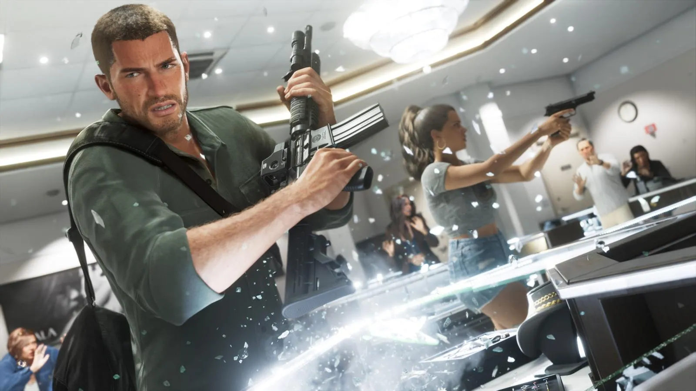

Трофеи и достижения GTA 6: сколько их и есть ли платина
Опубликовано:

- По данным датамайна 7 ноября — 55 трофеев на PS5 и 55 достижений на Xbox. Rockstar не подтверждала.
- Это больше, чем у GTA 5 и Red Dead Redemption 2 в день выхода.
- Платина почти наверняка будет; по данным Insider Gaming, на неё уйдёт около 200 часов.
- Списков с названиями официально нет — те, что гуляют по сети, не подтверждены.
Коротко
| Что | Данные | Статус |
|---|---|---|
| Трофеев на PS5 | 55 | датамайн, 07.11.2026 |
| Достижений на Xbox | 55 | датамайн, 07.11.2026 |
| Платина | скорее всего, да | не подтверждено |
| Часов на платину | ≈ 200 | Insider Gaming, 15.11.2026 — слух |
| Онлайн-трофеи | не на старте | GTA Online для GTA 6 выйдет позже |
| Названия трофеев | неизвестны | официального списка нет |
Откуда цифра 55
7 ноября 2026 года известный датамайнер Rockstar Tex2 (TexFunz2) опубликовал в X данные о достижениях GTA 6. По его словам, в игре настроено 55 достижений. У 54 из них очки идут по порядку от 1 до 54, а у одного стоит значение 1000. Новость подхватили фанатский сайт iGrandTheftAuto, Insider Gaming (8 ноября) и Notebookcheck.
Что значит запись на 1000 очков, непонятно. Это может быть награда за полное прохождение или заготовка под «мифическое» достижение Xbox — новый высший уровень, который Microsoft выдаёт за всю игру целиком. Названия, описания и условия получения в данных не нашли.
Сравнение с другими играми Rockstar
| Игра | Трофеев (с платиной) |
|---|---|
| GTA Vice City | 43 |
| GTA San Andreas | 48 |
| GTA 4 | 51 |
| GTA 5 (на старте) | 51 |
| Red Dead Redemption 2 | 52 |
| GTA 6 | 55 (датамайн) |
Позже у GTA 5 трофеев стало 78 — их добавляли вместе с контентом GTA Online. С GTA 6, скорее всего, будет так же: онлайн-режим выйдет позже, и его награды, вероятно, появятся отдельным списком.
Будет ли платина
Почти наверняка: платина есть во всех крупных играх Rockstar на PlayStation, начиная с GTA 4. Её дают за все остальные трофеи. Официально Rockstar это не подтверждала. По данным Insider Gaming, на платину уйдёт около 200 часов. Одна из причин — животные: в Леониде больше 170 видов. Подробнее о часах — в статье Сколько часов проходится GTA 6: сюжет, миссии, платина.
«Слитые» списки с названиями
После новости о 55 достижениях по сети пошли «полные списки» — с названиями вроде «Welcome to Vice» и пунктами про стриптиз-клубы и казино. Им верить нельзя. Ни Rockstar, ни известные датамайнеры названий не публиковали — об этом отдельно предупреждает немецкий GIGA. Мы такие списки не перепечатываем.
Когда появится настоящий список
Обычно списки трофеев и достижений появляются за несколько дней до релиза: данные попадают в PlayStation Store и Xbox Store, и их видят сайты-трекеры. Как только список станет официальным или откроется в игре 19 ноября, мы выложим его здесь — на русском, с условиями и советами, что можно пропустить.
- GTA 6 в день выхода получит больше трофеев, чем любая прошлая игра Rockstar.
- Трофеи и достижения GTA 6, судя по данным, только за сюжет — без онлайна.
Частые вопросы
Сколько трофеев в GTA 6?
55 трофеев на PS5 и 55 достижений на Xbox — по данным датамайна 7 ноября 2026 года. Rockstar не подтверждала.
Есть ли платина в GTA 6?
Скорее всего, да: она есть во всех крупных играх Rockstar на PlayStation. Официально не подтверждено.
Сколько часов на платину GTA 6?
Около 200 часов — по данным Insider Gaming; не подтверждено.
Где список трофеев GTA 6?
Официального списка с названиями пока нет. Списки в сети — фейки.
Источники: Tex2 (@TexFunz2) в X, 07.11.2026 — через Shiftdelete (09.11.2026), Notebookcheck (08.11.2026), Insider Gaming (08.11.2026), Power Up Gaming; GTABase (число трофеев прошлых игр); GIGA; gtaintel.com; Insider Gaming, 15.11.2026.
Каждый день — новости, фишки и секреты GTA 6 за 30 секунд. Подписывайтесь:
YouTubeInstagramTikTok